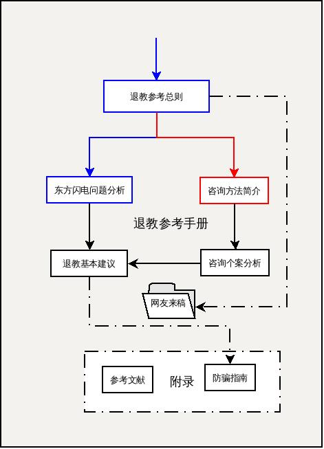

| 正/负 | 序号 | R | Y | B | G |
|---|---|---|---|---|---|
| 正面因素 | 1 | 才思敏捷，善于表达 | 注意结果，目标导向 | 工作生活，有条有理 | 天性友善，善于合作 |
| 2 | 待人真诚，乐于助人 | 锐意进去，积极上进 | 遵守规则，严格守时 | 崇尚祥和，温柔祥和 | |
| 3 | 反映迅速，爆发力强 | 意志坚强，越挫越勇 | 成熟稳定，安全放心 | 关心他人，有同情心 | |
| 4 | 打破沉闷，令人愉悦 | 高瞻远瞩，目光远大 | 审时度势，深思熟虑 | 化解矛盾，避免冲突 | |
| 5 | 热情洋溢，生动活泼 | 有全局观，抓大放小 | 深层交流，默契当先 | 化解矛盾，避免冲突 | |
| 6 | 幽默生动，充满乐趣 | 居安思危，永不满足 | 低调内敛，甘居幕后 | 讲求平衡，追求和谐 | |
| 7 | 善于激励，有感染力 | 不畏危险，敢于挑战 | 善于分析，发现问题 | 善于聆听，极具耐心 | |
| 8 | 情感外露，表现力强 | 高效快速，控制力强 | 完美主义，一丝不苟 | 不疾不徐，中庸之道 | |
| 9 | 积极开朗，追求快乐 | 高度负责，有责任感 | 关注细节，追求卓越 | 宽容大度，心态平和 | |
| 10 | 别出心裁，有创造力 | 权威在握，不能容错 | 感情细腻，体贴入微 | 面对压力，不易紧张 | |
| 11 | 有错就认，勇于道歉 | 坦率直接，直言不讳 | 坚韧执着，尽忠职守 | 乐天知命，与世无争 | |
| 12 | 富于童心，天真有趣 | 自信心强，不易气馁 | 注重承诺，待人忠诚 | 镇定自若，处事不惊 | |
| 13 | 善于交际，喜欢交友 | 精力旺盛，永不疲倦 | 思想深邃，独立思考 | 先人后己，谦让他人 | |
| 负面因素 | 1 | 咋咋呼呼，惹人讨厌 | 自以为是，死不认错 | 难以捉摸，相处困难 | 懦弱无刚，胆小怕事 |
| 2 | 口无遮拦，缺少分寸 | 工作第一，施压于人 | 严肃阴沉，难以接近 | 纵容放任，姑息养奸 | |
| 3 | 情绪波动，忽上忽下 | 强硬严厉，批判性强 | 要求苛刻，压抑紧张 | 不思进取，安于现状 | |
| 4 | 冲动鲁莽，经常后悔 | 脾气暴躁，缺乏耐心 | 敏感脆弱，易受伤害 | 自信匮乏，没有主见 | |
| 5 | 变化无常，随意性强 | 骄傲自大，一意孤行 | 沉溺往事，郁闷难解 | 羞于拒绝，惹祸上身 | |
| 6 | 丢三落四，杂乱粗心 | 只顾目标，沉迷工作 | 消极悲观，迂腐封闭 | 逃避责任，消极被动 | |
| 7 | 虎头蛇尾，半途而废 | 控制欲强，操纵他人 | 喜好批评，挑剔他人 | 袖手旁观，不去解决 | |
| 8 | 不切实际，耽于空想 | 忽视感受，不善理解 | 忧郁孤僻，情绪负面 | 缺少激情，无趣乏味 | |
| 9 | 及时行乐，不思忧患 | 喜欢争辩，引发冲突 | 猜忌多疑，不易信任 | 害怕冲突，没有原则 | |
| 10 | 畏惧压力，不能坚持 | 自我中心，忽视他人 | 死板固执，不会变通 | 行动迟缓，慢慢腾腾 | |
| 11 | 不守承诺，难以信任 | 铁石心肠，缺乏同情 | 顾虑过多，优柔寡断 | 没有自我，迷失方向 | |
| 12 | 缺乏自控，讨厌束缚 | 咄咄逼人，乐于进攻 | 专注细节，因小失大 | 迁就他人，压抑自己 | |
| 13 | 不能专注，喜欢插话 | 不善体谅，毫无抱怨 | 迟疑等待，错失机会 | 惯性思维，拒绝改变 |
R=红桃，Y=黑桃，蓝=方片，绿=草花。 最好采用两幅不同的扑克牌，根据一一对应的关系，将上图中的文字贴在其正面。 例如R1=红桃A，Y13=黑桃K，B8=草花8,如此类推。
～～～～～～以下是调查问卷用户需要注意的地方～～～～～～
过去性格特征部分：
正面
负面
现在性格特征部分:
正面
负面
～～～～～～～～～～～～请务必按照规格填写～～～～～～
